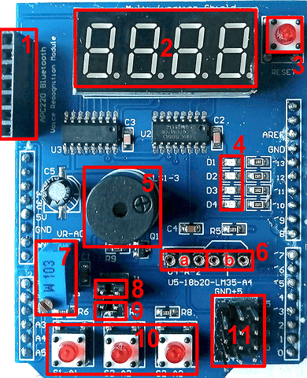
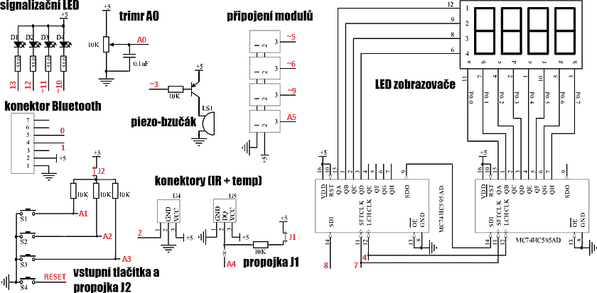
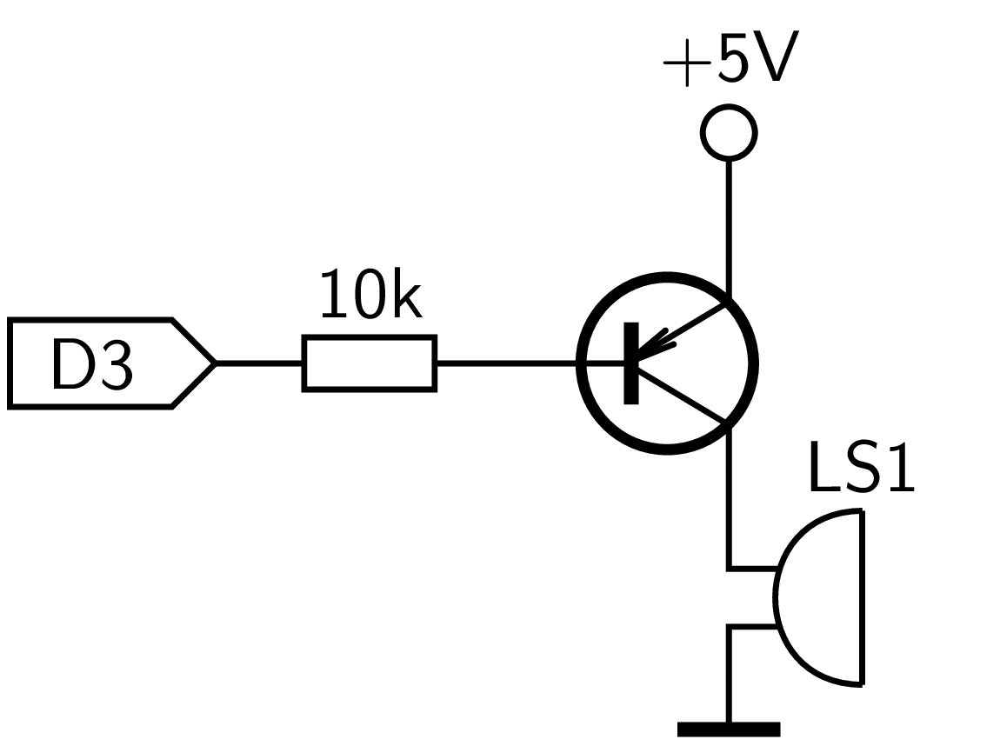
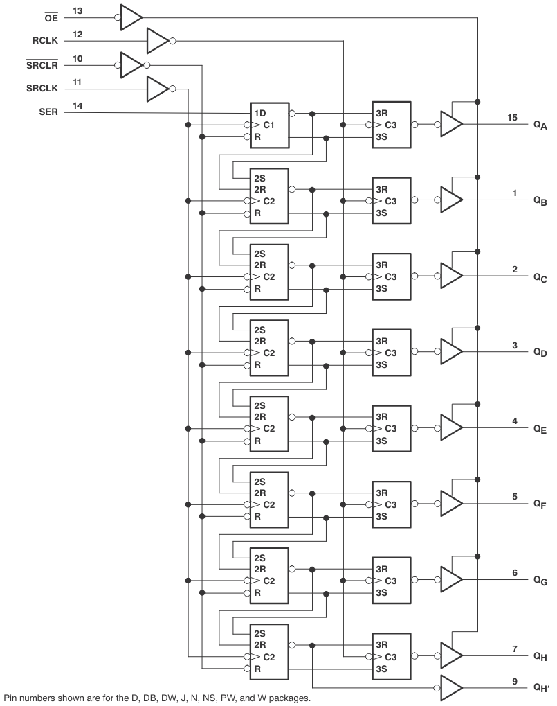
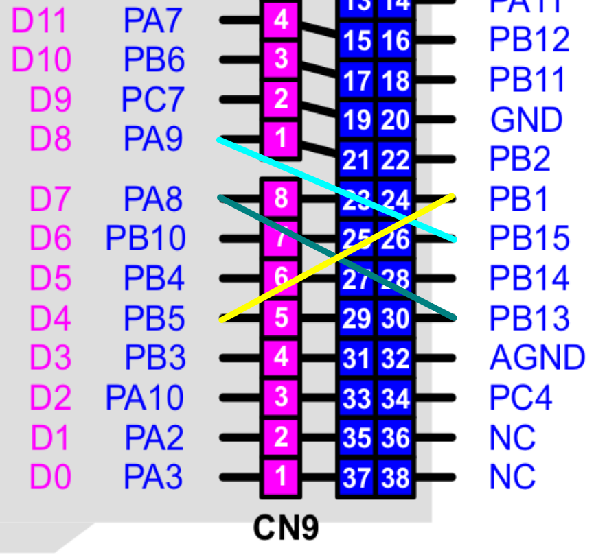

Modul Funduino 1.0 #
Funduino je populárny výukový modul pre Arduino UNO, ktorý je osadený základnými perifériami a konektormi pre pripojenie ďaľších zariadení.
{kind=link}

Obr. 54 Modul Funduino, verzia 1.0.#
Popis a zapojenie #
Zapojenie modulu je na obrázku
{kind=link}

Obr. 55 Zapojenie modulu Funduino, verzia 1.0.#
LED diódy #
Na module sú zapojené 3 LED diódy, ich anódy sú pripojené cez rezistor 1k k napájaciemu napätiu +5V. Katódy sú pripojené k pinom mikrokontroléra, dióda sa rozsvieti pri stave piny LOW. Pripojenie LED je uvedené na nasledujúcom obrázku a v tabulke.
{kind=link}
Obr. 56 Zapojenie LED diód na module Funduino.#
Funduino |
Arduino |
NUCLEO-64 |
|---|---|---|
D1 |
D13 |
PA5 |
D2 |
D12 |
PA6 |
D3 |
D11 |
PA7 |
D4 |
D10 |
PB5 |
Poznámka
K pinu PA5 je doske NUCLEO-64 štandardne pripojená zelená LED, ktorá ovlyvňuje stav LED D1.
Príklad riadenia LED
Program rozsvietenia a postupn0 zhasnutia LED
from pyb import Pin
from time import sleep
d1 = Pin('PA5', Pin.OUT)
d2 = Pin('PA6', Pin.OUT)
d3 = Pin('PA7', Pin.OUT)
d4 = Pin('PB6', Pin.OUT)
d1.off(); d2.off(); d3.off(), d4.off()
sleep(0.5)
d1.on()
sleep(0.5)
d2.on()
sleep(0.5)
d3.on()
sleep(0.5)
d4.on()
Tlačítka #
Na module sa nachádzajú tri tlačítka pre všeobecné použitie a resetovacie tlačitko mikrokontroléra.
{kind=link}
Obr. 57 Zapojenie tlačítok na module Funduino.#
Bzučiak #
Obvody pasívneho bzučiaka sú pripojené k pinu D3. Pre spustenie potrebuje bzučiak signál 1kHz, ktorý je generovaný časovačom TIM2 na kanáli CH2 v móde PWM.
{kind=link}

Obr. 58 Zapojenie bzuciaka na module Funduino.#
Funduino |
Arduino |
NUCLEO-64 |
|---|---|---|
LS1-3 |
D3 |
PB3 |
Príklad spustenia a zastavenia bzučiaka
import pyb
from time import sleep
t1 = pyb.Timer(2, freq=1000)
# spistenie bzuciaka
ch2 = t1.channel(2, pyb.Timer.PWM, pin=pyb.Pin.board.PB3, pulse_width_percent=25)
sleep(0.5)
# zastavenie bzuciaka
t1.deinit()
LED Display #
4-znakový LED display je riadený dvoma 8-bitovými posuvnými registrami 74HC595 pripojenými k SPI rozhraniu. Obvod obsahuje 8-bitový posuvný register typu serial-in / paralell-out a 8-bitový pamätový redister tvorený D-klopnými obvodmi. Vnútorná štruktúra obvodu je zobrazená na obrázku
{kind=link}

Výstupy prvého posuvného registra sú pripojené k anódam znakov, výstupy druhého ku katódam segmentov. Pre rozsvietenie jedného znaku potrebujeme do posuvných registrov vyslať postupnosť 2x 8bitov, ktoré sa zapíšu do posuvných registrov.
pin = Pin('PB1', Pin.OUT)
spi = SPI(2, SPI.CONTROLLER, baudrate=100000, polarity=0, phase=0, crc=None)
pin.value(False) # povolenie zapisu do registrov
spi.send(0xC0) # kod znaku, vyber segmentov duspleja
spi.send(oxF1) # vyber segmentovky
pin.value(True) # ukoncenie zapisu a preun hodnoy do pamete registra
Poznámka
Sériové rozhranie SPI(2) nie je na module NUCLEO-64 mapované na piny, ktoré vyžaduje modul Funduino, je preto potrebné prepojiť piny na vonkajšom konektore modulu NUCLEO-64 podľa nasledujúceho obrázku:
{kind=link}

Obr. 60 Prepojenie pinov (26-21, 30-23, 24-29) pre rozhranie SPI.#
Príklad rozsvietenie jedneho znaku displeja
from pyb import SPI, Pin, Timer
import time
# kodova tabulka segmentov pre zobrazenie cislic
# 0 1 2 3 4 5 6 7 8 9
num_code = [0xC0,0xF9,0xA4,0xB0,0x99,0x92,0x82,0xF8,0x80,0x90]
# kodova tabulka pozicie znakov
# 0 1 2 3
num_pos = [0xF1,0xF2,0xF4,0xF8]
pin = Pin('PB1', Pin.OUT)
spi = SPI(2, SPI.CONTROLLER, baudrate=100000, polarity=0, phase=0, crc=None)
pin.value(False)
spi.send(num_code[3]) # kod znaku
spi.send(num_pos[2]) # poloha na displeji
pin.value(True)
Príklad zobrazenia dát na displeja v programovej slučke
Pomocou cyklu for … rozsvietime postupne všetky segmenty displeja, programová slučka je ale blokujúca pre iné aktivity.
from pyb import SPI, Pin, Timer
import time
# kodova tabulka segmentov
num_code = [0xC0,0xF9,0xA4,0xB0,0x99,0x92,0x82,0xF8,0x80,0x90]
# kodova tabulka znakov
num_pos = [0xF1,0xF2,0xF4,0xF8]
# obsah displeja
num_disp = [4,3,7,9]
# chip select
pin = Pin('PB1', Pin.OUT)
spi = SPI(2, SPI.CONTROLLER, baudrate=100000, polarity=0, phase=0, crc=None)
for j in range(4000):
for i in range(4):
pin.value(False)
spi.send(num_code[num_disp[i]]) # kod znaku
spi.send(num_pos[i]) # poloha na displeji
pin.value(True)
Príklad zobrazenia dát na displeja pomocou prerušenia časovača
Cyklus obnovenia stavu displeja je riadený prerušením od časovača. Pri vyvolaní prerušenia je volaná funkcia update_display(), ktorá zobrazí znaky z poľa num_disp[], hodnoty v tomto poli je možné počas behu programu meniť.
from pyb import SPI, Pin, Timer
import time
def update_display(timer):
for j in range(16):
for i in range(4):
c = num_disp[i]
pin.value(False)
spi.send(num_code[c])
spi.send(num_pos[i])
pin.value(True)
# zhasnutie poslednej cislice v pauze, aby vsetky svietli rovnako
pin.value(False)
spi.send(0xFF)
spi.send(0xF8)
pin.value(True)
def display_int(x):
# zobrazenie cisla 0...9999
if x in range(0, 10000):
global num_disp
a = int(x/1000)
b = int( (x-a*1000) / 100 )
c = int( (x-a*1000-b*100)/10)
d = int( (x-a*1000-b*100 - c*10))
num_disp=[a,b,c,d]
num_code = [0xC0,0xF9,0xA4,0xB0,0x99,0x92,0x82,0xF8,0x80,0x90]
num_pos = [0xF1,0xF2,0xF4,0xF8]
num_disp = [1,2,3,4]
# chip select
pin = Pin('PB1', Pin.OUT)
spi = SPI(2, SPI.CONTROLLER, baudrate=100000, polarity=0, phase=0, crc=None)
tim = Timer(4)
tim.init(freq = 50)
pin.value(True)
# dynamicka obnova stavu displeja v preruseni casovaca
tim.callback(update_display)